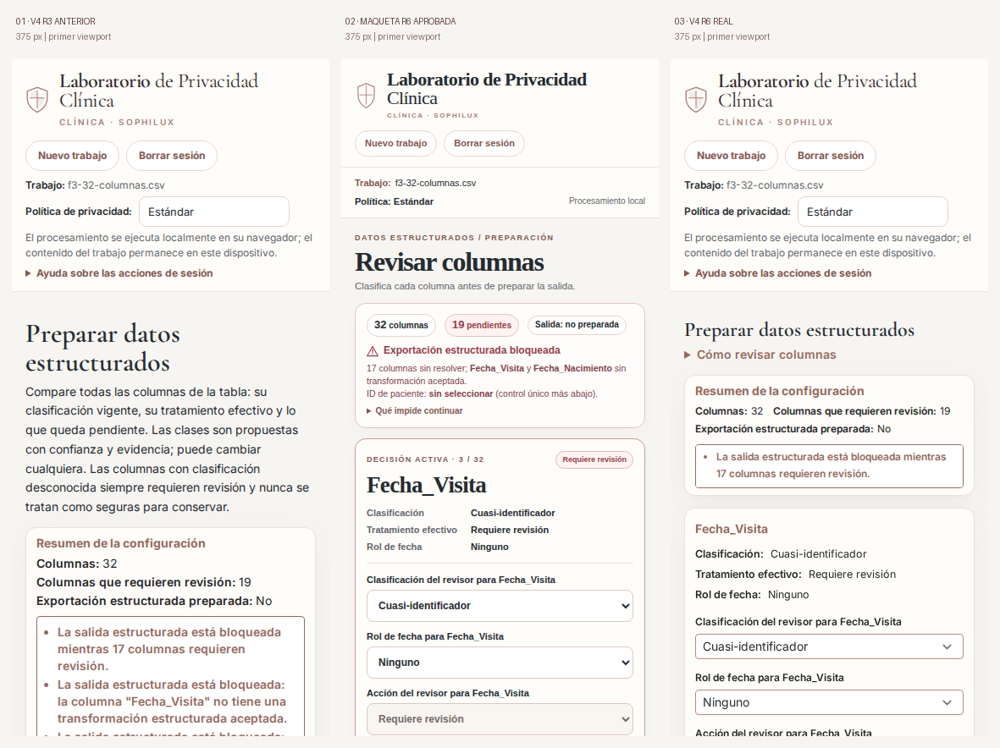

Lo que mejoró
El selector de clasificación aparece aproximadamente a 679 px con 375 px de ancho y 714 px con 320 px. La decisión ya no queda detrás de las 32 filas.
Lo que se conserva
Cuatro campos comparativos, todas las filas accesibles, una única autoridad de ID de paciente, acciones del dominio, razones reales de bloqueo y separación Safe/Confidential.
Validación técnica
Pruebas E2E sobre build Vite, 32/19 como hechos derivados, selección de una sola columna, filtros que no toman decisiones, avisos accesibles por teclado y escritorio alineado.
En R6 no se ha aprobado ni modificado el comportamiento clínico. Las razones de bloqueo completas permanecen accesibles en una lista desplazable y enfocables con el teclado; la salida sigue bloqueada mientras haya pendientes. El diseño anterior R3 se mantiene como testigo congelado.